Expert Developer 1: Scenario 2 Observational Notes
This scenario evaluates the code generation when frontend and backend are generated separately using high-level specifications. The observations reveal improvements in architecture and structure, but also persistent and new issues in code quality, security, and maintainability.
Generation
Since we separated the FE/BE the model now is able to generate a much more complete code, however it is far from what I expect, it adds unnecessary functionalities that is not necessary.
For backend: It implemented unnecessary functionalities that we did not ask for. It implemented getMovies functionality for TMDB, added removeMember functionalities, added VotingSession types for create group, ...). Same as S1, it has a lot of build errors. Since we separated the backend generation, there is not much difference between the implemented backend in S1 and S2, S2 has just a bit more code and it make sense since in S1 most of the generation time was allocated to backend.
For frontend: The code has problems with gradle configurations. I can see most of the functionality logic of voting, joining, ... implemented but there are things missings with todos left like handling the voting session and group details menu for the owner. It generates a UI but puts TODO in the hanlder functions. Although it is a lot more frontend code implemented than S1, it still lacks a complete implementation of all functionalitites and the app is not runnable.
Run & Build
Backend Runs but doesn't build with 80 errors.
ESLint not configured correctly.
package.json OK https://snyk.io/advisor/check/npm/7d0dd3c7-a357-4249-ab77-da0f8c57640f/needReview
Frontend doesn't build.
Cannot build Build was configured to prefer settings repositories over project repositories but repository 'Google' was added by build file 'build.gradle.kts'
Unresovled references:
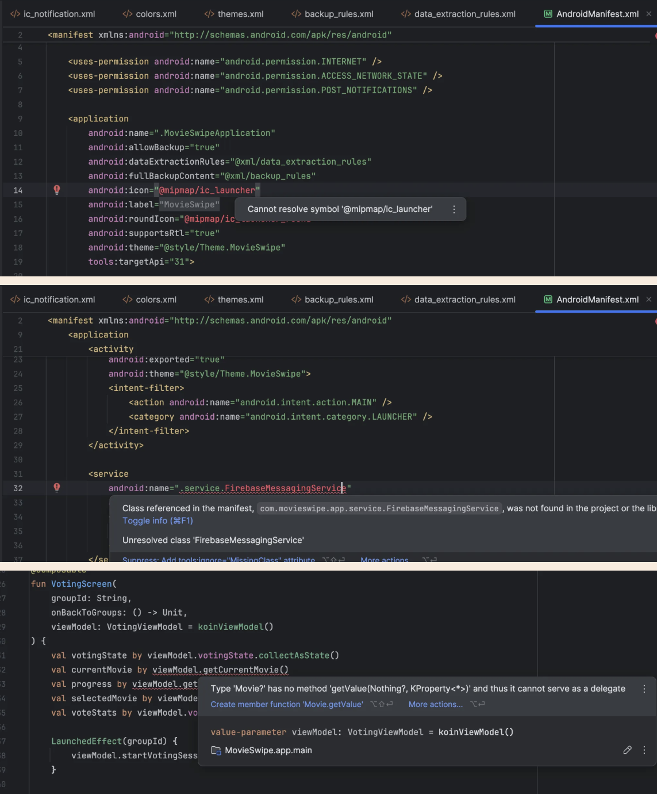
Bugs
[Major] Start and end voting session is not admin-specific.
[MAJOR] Wrong check for group membership, always returns false.
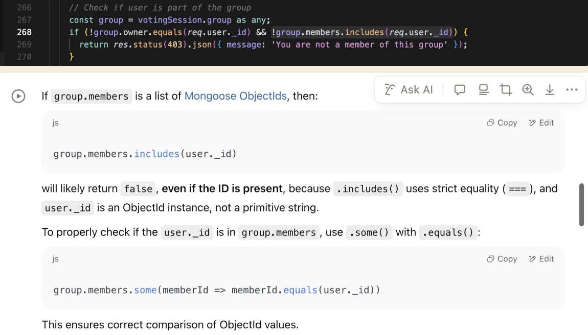
Include has Same-value-zero equality.
[MINOR] Doesn't check if invitation code already exists for another group
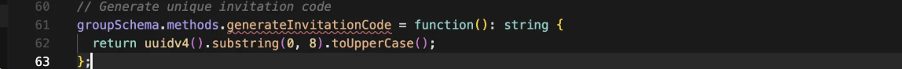
[MINOR] If you could not match a movie it's not a bug to return error.
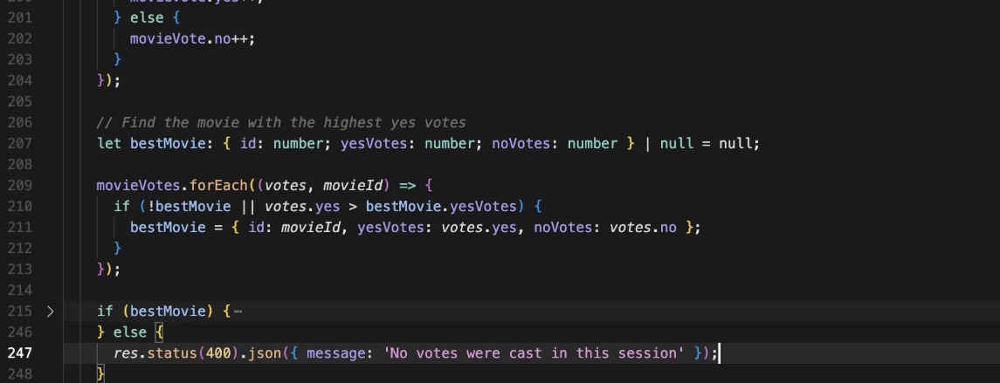
Incorrect error handling
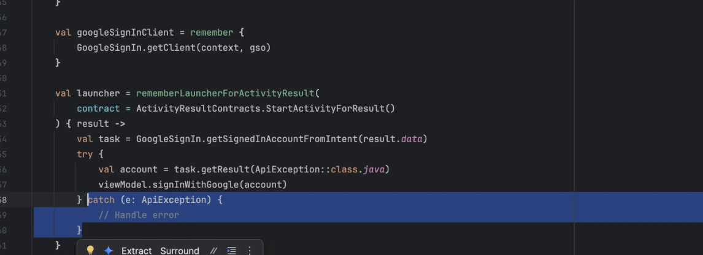
Does not provide error specific error messages.
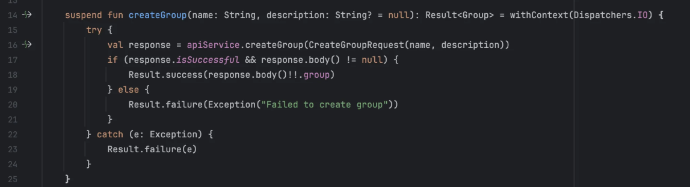
Unused Code
Some parts of the generated code is never used / greyed out by IDE.
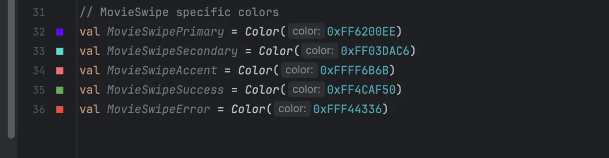
Duplicate code
Duplicate chip composable in auth screen and profile screen.
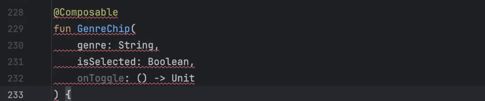
Naming Issues
inconsistent variable naming: loadingVotingScreen and VotingActiveScreen
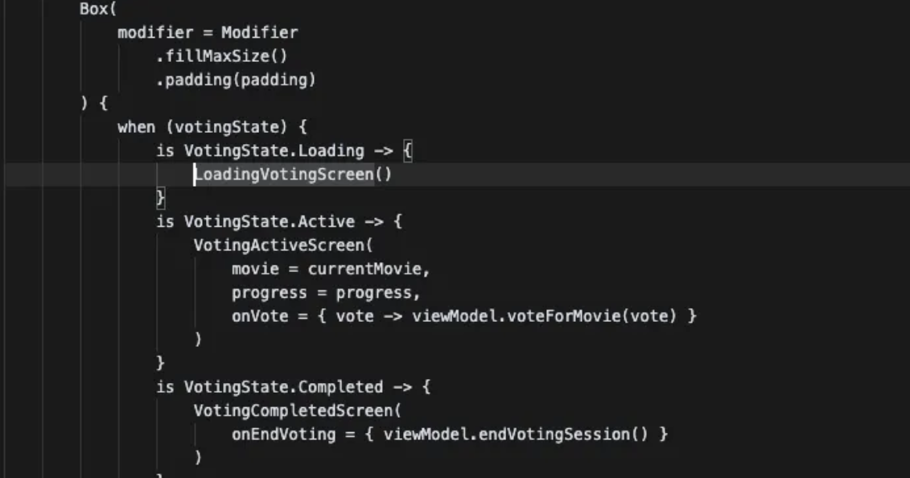
Inconsistencies
/google, /me, /preferences do not return the same user object. /me has groups whereas the other two does not.
get and put profile do not return the same user object.
Hard-coded values
Base URL
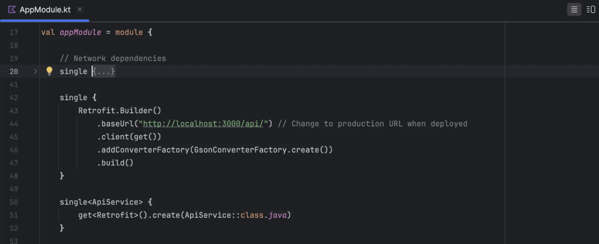
IDS
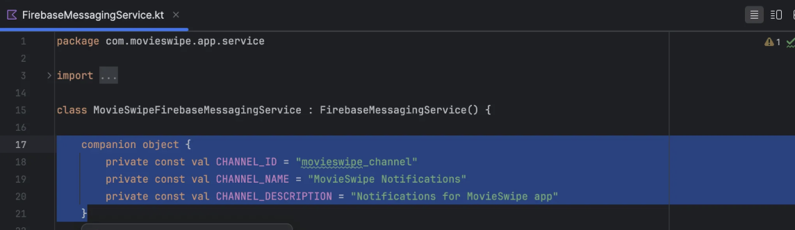
Unnecessary code
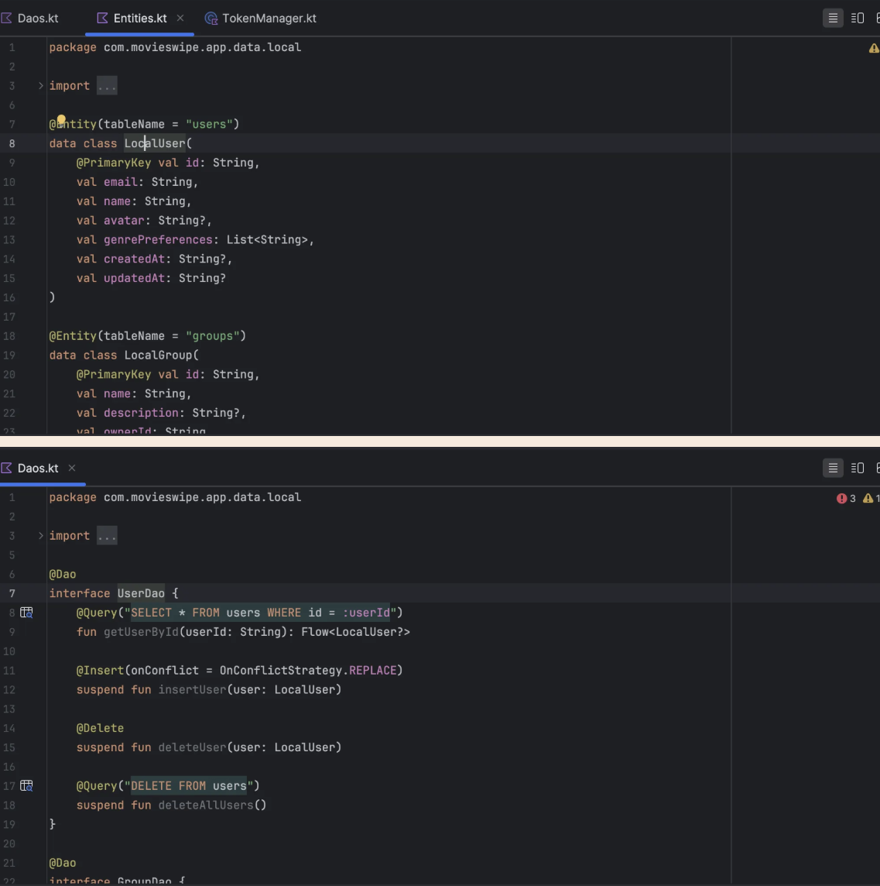
Typing issues
Use of any: 31 found with search query of : any.
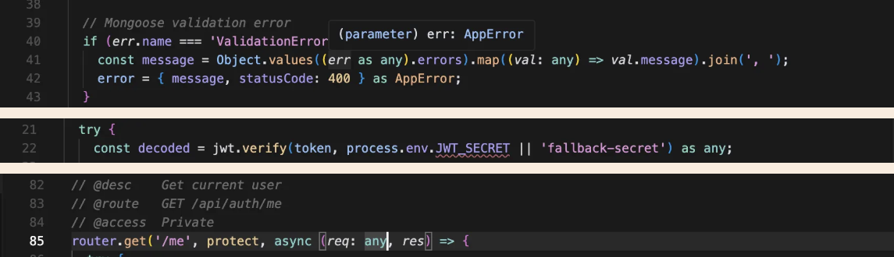
Incomplete typing
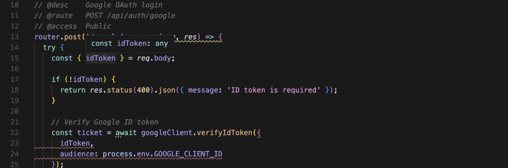
Structure
API logic should be handled in controllers.
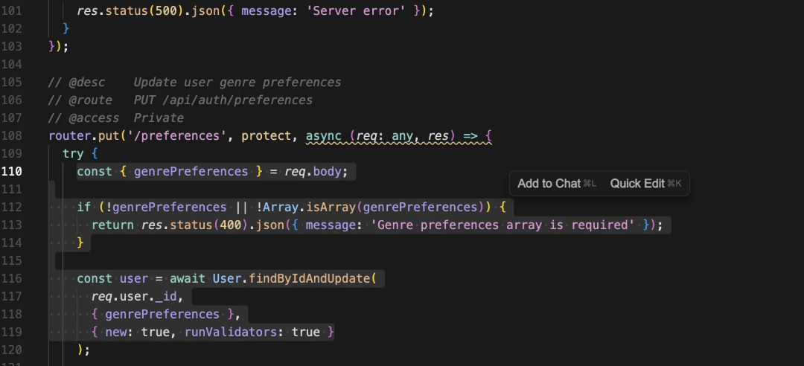
Efficiency
Using two for loops instead of one. Making it less efficient and harder to read.
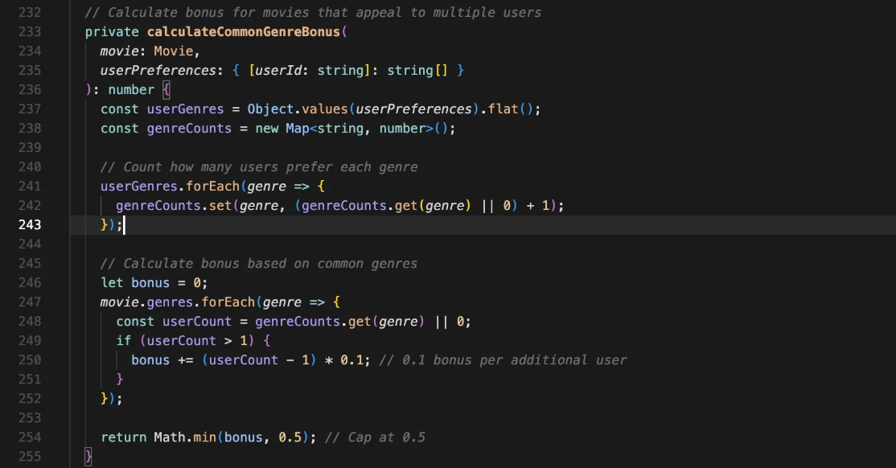
Deprecated APIs
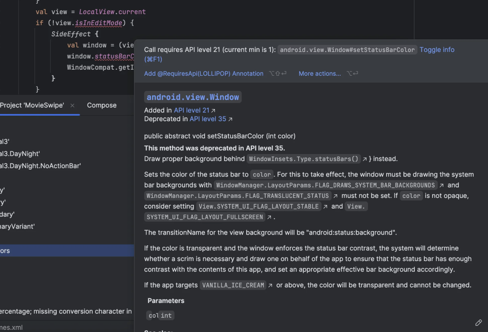
Other Notes
Connects to firebase for push notifications, but firebase is not setup in the backend
Missing accessibility support for ui elements
Some of problems are propagated from the backend generated code
Has interceptor for tokens